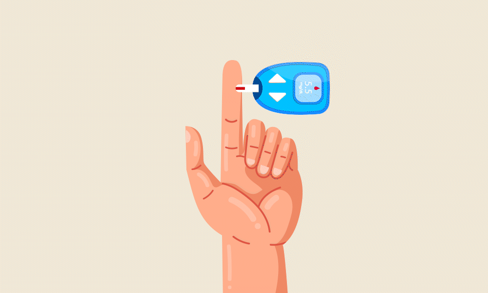

Morning
Start your day with a nutritious breakfast such as bread with cheese, an egg, fruit, and dark chocolate. If you have a long day ahead, make sure to have a small snack at 10 AM to prevent your blood sugar from dropping below 0.70.
Midday

At lunchtime, always begin your meal with a salad rich in a variety of vegetables. This helps your body absorb carbohydrates more effectively and maintain stable blood sugar levels throughout the day.
Afternoon

For adults with type 2 diabetes, exercising in the afternoon, between 1:43 PM and 5:00 PM, has been shown to improve blood sugar levels significantly. Incorporating light physical activity during this time can be highly beneficial.
Evening
Before going to bed, measure your blood sugar levels. If your levels are between 0.70 and 0.80, take a small snack to keep them stable overnight. This can help prevent nocturnal hypoglycemia and ensure a restful night.
Exercise Timing Tips
For people with prediabetes or type 2 diabetes, exercising after meals can optimize blood sugar control. However, individuals with type 1 diabetes may benefit more from exercising earlier in the day to avoid fluctuations in their blood sugar levels.